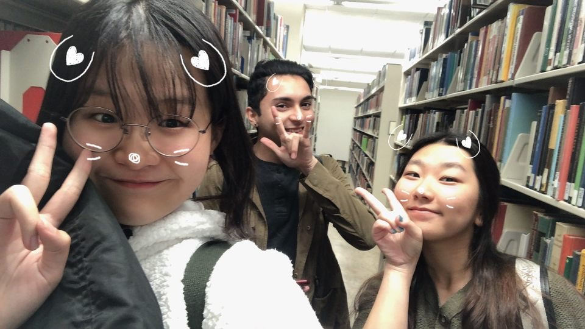
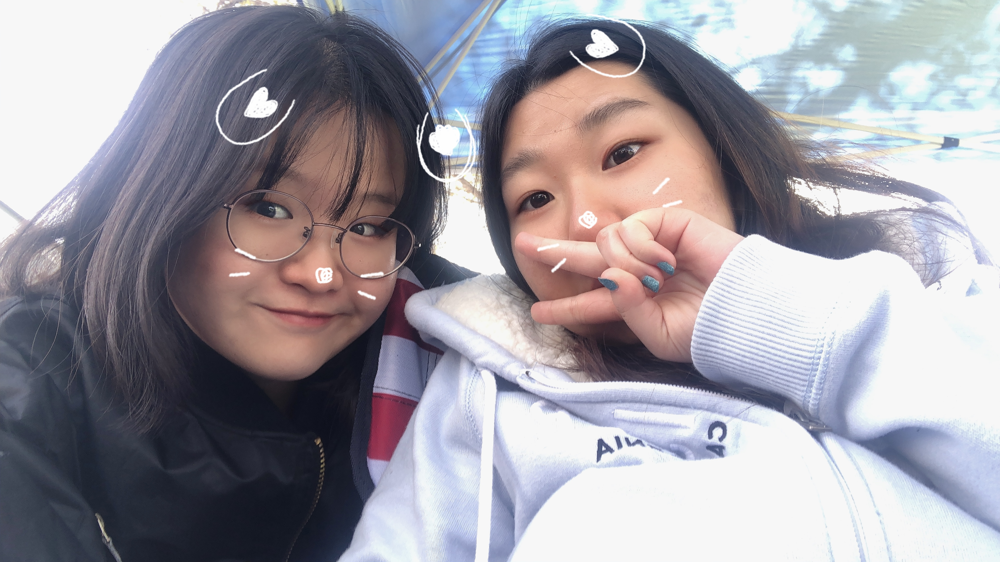
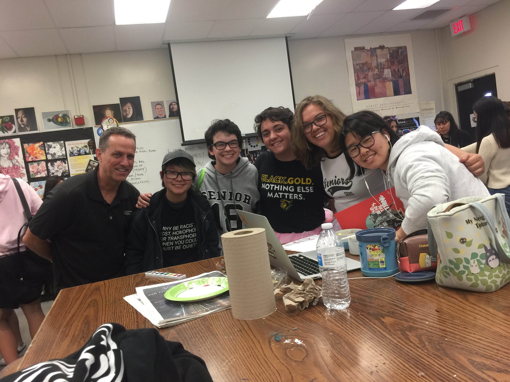

Soo Choi
Major: Psychology
My name is Soo Choi!
I am currently a student at the University of California, Riverside studying Psychology. I am in a professional honors fraternity called Phi Sigma Pi, and I have had leadership experience in the clubs that I participated in, such as the Conservatory of Fine Arts (COFA) in Sunny Hills High School and Korean Culture Club. My hobbies are playing with my dog, Sunny, and photography. I have experience with photo editing and tutoring since I often tutor elementary school students. I plan to be in a research lab for psychology and be in a board position for Phi Sigma Pi in my upcoming years.
Leadership is significant to me because I have learned what it means to be a leader and what experiences you must overcome to become one. In my perspective, the qualities of a leader consist of honesty, confidence, commitment, effective communication, and decision-making. My most significant leadership experience is my involvement with the Conservatory of Fine Arts (COFA) program at Sunny Hills High School. COFA is an art program made for Sunny Hills High School students that sponsor art shows, musicals, and festivals. My passion had led me to leadership positions in COFA--Director of Showcase and Assistant Director of Quadshow. As one of the directors of the showcase, I was able to share what visual arts are to individuals. During the exhibition, I introduced the visual arts classes to individuals and helped other peers. I felt more than satisfied with the results because not only was the event a success, but me and the directors, as a team, came up with a new theme different from last year's theme. Through this experience, I improved my communication skills and learned that group effort is essential. Not only does leading make me feel like I'm making a difference, but it also gives me happiness to be working with others and meeting new peers. Success takes on many different definitions by others. Still, to me, success means feeling that shiver of energy about what one does, staying with what makes a difference through tough occasions, carrying on with a real existence one can feel proud for by and large.
The qualities of a leader consist of honesty, confidence, commitment, effective communication, and decision-making. From my experiences, one leader that exemplified those qualities was my senior friend from my sophomore year when my teacher appointed her as president of the Dynamic Korean unit. I was in the group as an assistant, and I did not think I was capable of becoming a leader at that time. With her commitment to the club and effective communication with peers, she tutored students who wanted to learn Korean and acted as coordinator for the Korean Culture Night. The Korean Culture Night is an event that showcases the dances, traditional costumes, and instruments of Korean culture. I realized that I wanted to become a leader because of my friend, making a difference with a futuristic vision and learn myself through empowerment and accountability. This experience not only has made me appreciative of my own culture, but I also learned how a leader could inspire others to dream more, learn more, and encourage others to become more as my friend did for the club.
Experience
Phi Sigma Pi
• Planned events for social, scholarship, fundraising, and service
• Experience with leadership
• Planned to be Rush Advisor for the fraternity
Tutor
• Tutored elementary school and high school students
• Tutored specifically on Math, English, and Korean
Director of Conservatory of Fine Arts (COFA)
• Planned an exhibition that showcased the program
• Was in the program for all four years of high school
• Graduated with awards from the program for significant contributions
• Still in the program to help organize events as an university student
Gamma Beta Phi
• Volunteeered in community service
• Honors group that focus on giving back to the community and also emphasizes on commitment
Education
UC Riverside
UC Riverside
Portfolio



